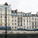
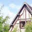
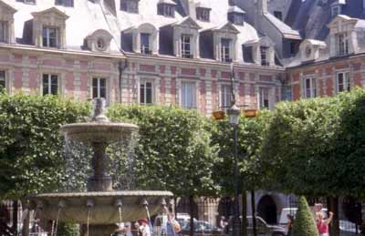
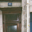
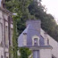
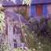
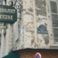

JUST OUTSIDE OF THE TUILERIES THIS CHARMING FRENCH SQUARE WAS NO DOUBT HOME TO NOBLES VISITING THE URBAN PALACES AND LATER THE HOME TO THE SCIENTISTS STUDYING THE MARVELS HOUSED IN THE LOUVRE.

"When my parents arrived we toured the gardens of the Tuileries and rode the Ferris wheel just across from Napoleon's obelisque. The view of Paris' rooftops from the Ferris wheel was breathtaking..."
Ducking through a tunnel under the Tuileries a charming square centered around a beautiful fountain unfolded. The stately homes were even more striking because of the uniformity of their design and the rich simplicity of their coloring.


